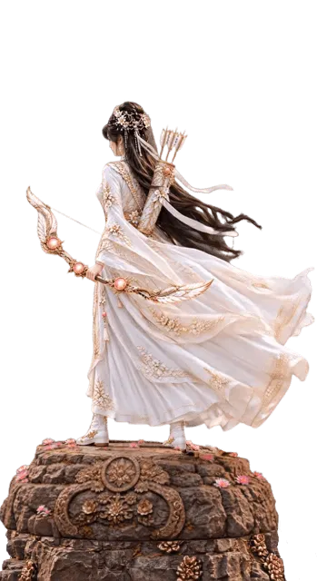
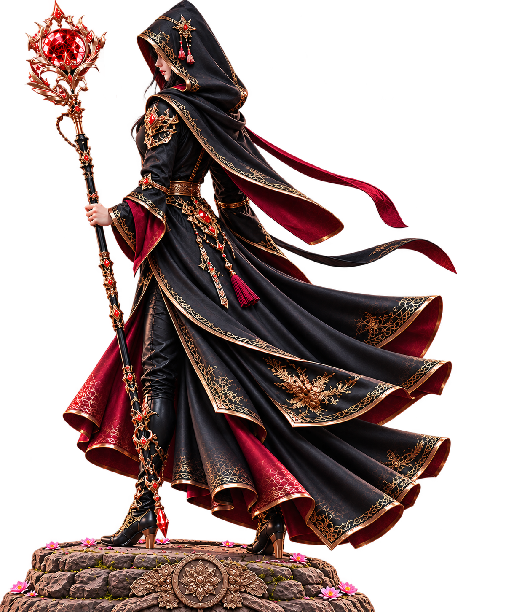
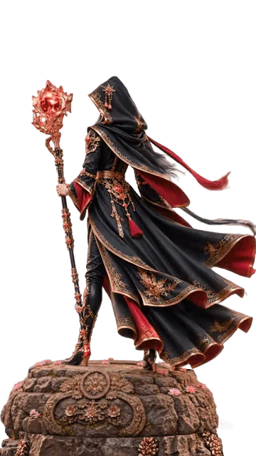

hero.png
Create a cinematic, photorealistic animation of the oriental archer hero shown in the reference image @hero.png , standing motionless on the rocky outcrop with her back facing the camera.
Animate the robes only. A steady, gentle but powerful wind blows from right to left, causing the hero’s long robes to flow continuously behind her.
Use a solid background (#6D6D6D).
No gradients, no shadows on the background.
Fixed focal length, same angle and composition from first frame to last frame.
No zoom, no pan, no tilt, no dolly, no tracking, no camera movement.
Perfectly seamless, continuous repeating animation.
The final frame must match the first frame.


hero.png
Create a cinematic, photorealistic animation of the oriental mage hero shown in the reference image @hero.png , standing motionless on the rocky outcrop with her back facing the camera.
Animate the robes. A steady, gentle but powerful wind blows from right to left, causing the hero’s long robes to flow continuously behind her.
Animate the crystal ball in her mage staff. A swirling, realistic red glowing crystal ball with particle effects swirling inside.
Use a solid white background (#FFFFFF).
No gradients, no shadows on the background.
No zoom, no pan, no tilt, no dolly, no tracking, no camera movement.
Perfectly seamless, continuous repeating animation.
The final frame must match the first frame.
